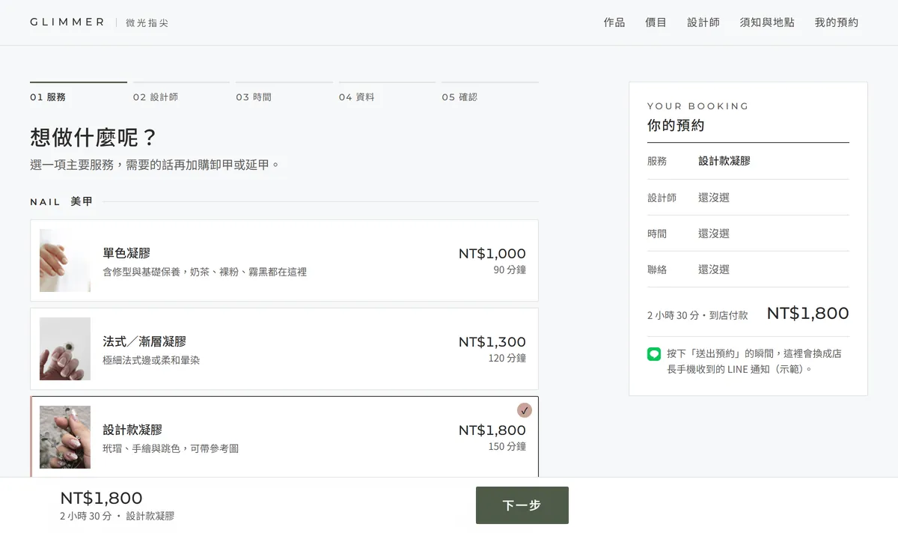
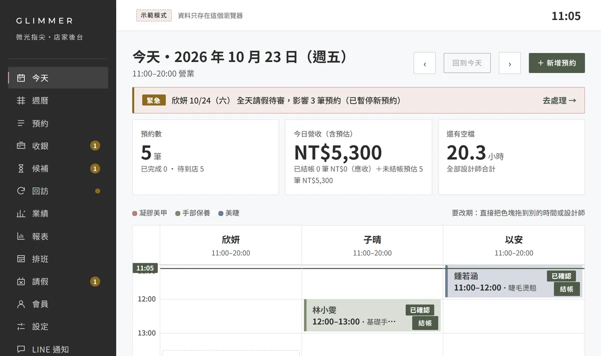

01CASE ・ BOOKING
美甲美睫店的線上預約＋店家後台，做出來長什麼樣？
示範作品・虛構品牌
這是諾豪做的示範作品：美甲美睫工作室的預約網站和店家後台。客人用手機三步約好，看作品照片可以直接約；有新預約時店長的 LINE 馬上收到。網站和後台都能直接點開試用。


02PROBLEM
遇到的問題
小店最花時間的是一則則回 LINE 約時間：問有沒有空、確認服務、提醒客人，還常常約錯。
03SOLUTION
怎麼做
- 客人自己在手機上選服務、選時段、留資料，三步完成。
- 作品照片旁邊就有預約按鈕，看到喜歡的直接約。
- 有新預約、取消或改期，店長的 LINE 馬上收到。
- 後台排班自動排，有人請假會推薦代班。
- 收銀結帳、定金、候補名單、回訪提醒、抽成月結與月報表。
04RESULT
這個示範能做到什麼
店家不用再一則則回訊息，客人隨時都能約；每個月的業績和抽成，後台直接算好。
ASTRO ・ CLOUDFLARE WORKERS ・ LINE
05SERVICE
對應服務
BOOKING SYSTEM店家 LINE 預約＋管理後台NT$45,000 起看服務說明 →想聊聊你的狀況？
LINE ID：@879gqgah・平日一個工作天內回覆